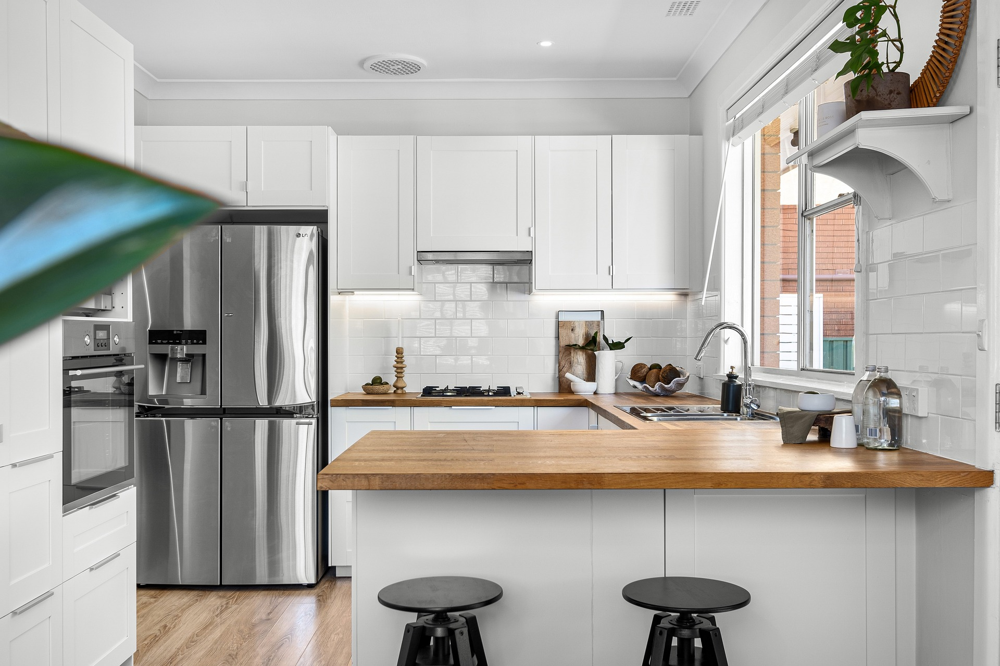

What colour of hair do you like?


How Do You Prefer Spending Your Time?
Which Kitchen Do You Prefer?


Which Instrument Would You Rather Play?

Answer the questions in the quiz by pressing the buttons below the images to find out if you're more likely to be a Linkin Park fan or Deftones fan.